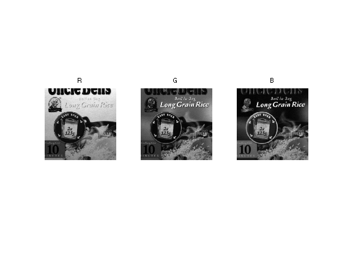
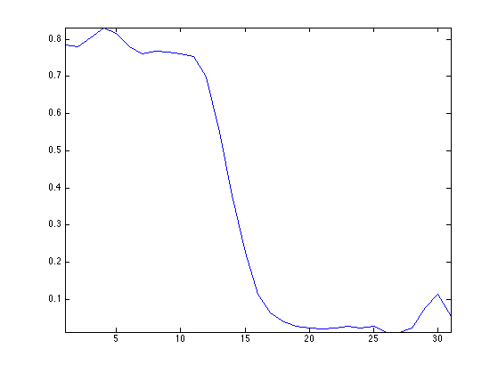
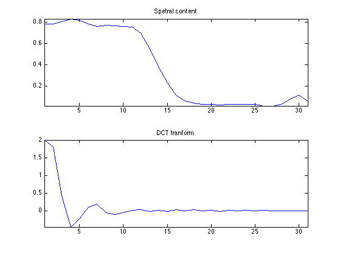
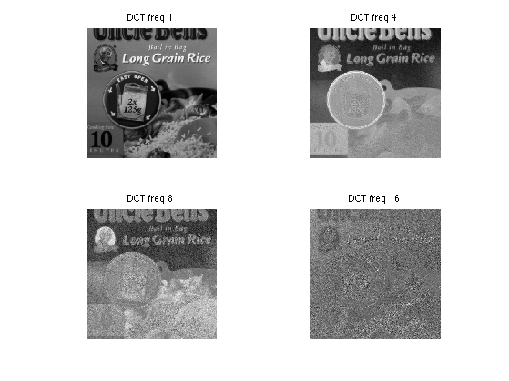

Multi-spectral Imaging
This numerical tour explores multi-spectral image processing.
Contents
Installing toolboxes and setting up the path.
You need to download the following files: signal toolbox and general toolbox.
You need to unzip these toolboxes in your working directory, so that you have toolbox_signal and toolbox_general in your directory.
For Scilab user: you must replace the Matlab comment '%' by its Scilab counterpart '//'.
Recommandation: You should create a text file named for instance numericaltour.sce (in Scilab) or numericaltour.m (in Matlab) to write all the Scilab/Matlab command you want to execute. Then, simply run exec('numericaltour.sce'); (in Scilab) or numericaltour; (in Matlab) to run the commands.
Execute this line only if you are using Matlab.
getd = @(p)path(p,path); % scilab users must *not* execute this
Then you can add the toolboxes to the path.
getd('toolbox_signal/'); getd('toolbox_general/');
The multispectral image used in this tour is taken from the database of Hordley, Finlayson, Morovic You can test the methods developped in this tour on other images.
Scilab user should increase memory. WARNING: This should be done only once.
extend_stack_size(10);
Multi-spectral Images
A multi-spectral image is a (n,p,q) cube of data, where (n,p) is the size of the image, and q is the number of spectral samples, ranging from infra-red to ultra-violet. The RGB channels are located approximately at samples locations [10 15 20]
We load a multispectral image.
name = 'unclebens'; options.nbdims = 3; M = read_bin(name, options); n = 256; M = rescale( crop(M,[n n size(M,3)]) ); % width of the image n = size(M,1); % number of spectral components p = size(M,3);
Display a few channels of the image.
clf; imageplot(M(:,:,10), 'R', 1,3,1); imageplot(M(:,:,15), 'G', 1,3,2); imageplot(M(:,:,20), 'B', 1,3,3);
Display an approximate RGB image.
rgbsel = [10 15 20];
clf;
imageplot(M(:,:,rgbsel), 'RGB');
Display the spectral content of a given pixel. As you can see, spectral curves are quite smooth.
% pixel location pos = [30 50]; % spectral content v = M(pos(1),pos(2),:); v = v(:); clf; plot( v, '.-'); axis('tight');
Multi-Spectral Image Compression
To perform the compression / approximation of the full cube of data, one needs to use a 3D transformation of the cube. One can use a truely 3D wavelet transform, or the combination (tensor product) of a 2D wavelet transform and a cosine transform.
A 1D DCT is first applied to each spectral content.
U = reshape( M, [n*n p] )'; U = dct(U); U = reshape(U', [n n p]);
We plot the spectral content of a pixel and its DCT transform. You can note that the DCT coefficients are quikcly decaying.
clf; subplot(2,1,1); v = M(pos(1),pos(2),:); v = v(:); plot(v); axis('tight'); title('Spetral content'); subplot(2,1,2); v = U(pos(1),pos(2),:); v = v(:); plot(v); axis('tight'); title('DCT tranform');
As the frequenc index i increase, the DCT component U(:,:,i) becomes small and noisy. Note that U(:,:,1) is the average of the spectral components.
ilist = [1 4 8 16]; clf; for i=1:length(ilist); imageplot(U(:,:,ilist(i)), ['DCT freq ' num2str(ilist(i))], 2,2,i); end
The tensor product transform is obtained by applying a 2D transform.
Jmin = 3; UW = U; for i=1:p UW(:,:,i) = perform_wavelet_transf(U(:,:,i), Jmin, +1); end
Display two differents sets of wavelets coefficients
clf; subplot(1,2,1); plot_wavelet(UW(:,:,1), Jmin); subplot(1,2,2); plot_wavelet(UW(:,:,10), Jmin);

Approximation is obtained by thresholding the coefficients.
% number of kept coefficients m = round(.01*n*n*p); % threshold to keep only m coefficients UWT = perform_thresholding(UW, m, 'largest');
Exercice 1: (check the solution) Implement the inverse transform to recover an approximation M1 from the coefficients UWT.
exo1;
Exercice 2: (check the solution) Compare the approximation error (both in term of SNR and visually) of a multispectral image with a 3D Haar basis and with a tensor product of a 2D Haar and a DCT.
exo2;
Multi-Spectral Image Denoising
A redundant representation of the multi-spectral image is obtained by using a DCT along the spectral dimension (3rd dimension) and a 2D translation invariant wavelet transform of the spacial dimension.
Exercice 3: (check the solution) Compare the denoising (both in term of SNR and visually) of a multispectral image with an independant thresholding of each channel within a translation invariant 2D wavelet basis, and with a thresholding of the DCT/invariant wavelet representation. For each method, compute the optimal threshold value.
exo3;